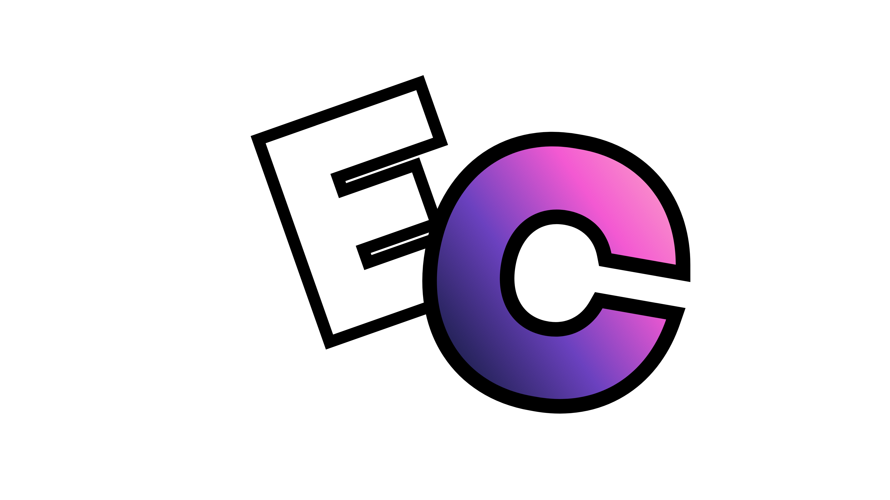

MessageLoggerEnhanced
Keeps deleted messages on screen, with the full history of every edit and ghost-ping detection.
Eyescord is a mod for the Discord desktop app. Deleted messages stay on screen, edits keep their history, and locked channels show up in the list. Those are three of its 93 exclusive plugins.
With Eyescord you still see noam's deleted message, what dan's edit replaced, and that #mod-chat exists, even though you can't open it.
93 exclusive plugins built for Eyescord. Turn on what you want in Settings. Everything else stays off.
Browse all pluginsKeeps deleted messages on screen, with the full history of every edit and ghost-ping detection.
Lists the channels you don't have access to, so you know what's there.
Push a user's or a stream's volume past Discord's maximum.
Right-click anyone to see every username they've had.
Hides your messages, DMs, links and images while you share your screen. Voice and the stream grid stay visible.
Hover the screen share icon to see who is watching your stream.
The installer finds Discord on your PC, patches it, and keeps a way back to stock.
Eyescord-Installer.exe, 53 MB. Windows may warn you that the file isn't signed. Click More info, then Run anyway.
Stable, PTB or Canary. The installer finds every version on your PC and patches the one you pick.
Open Settings. Eyescord has its own section there, with every plugin ready to switch on.
Discord's updates replace the files Eyescord patches. Run the installer again and choose Repair.
Run the installer and choose Uninstall. Discord goes back to stock.
Any client mod breaks Discord's Terms of Service, so there's always some risk.
Plugins that only change what you see are hard for Discord to notice. Plugins that send messages or act for you, like mass DMs, auto-replies or floods, look like spam, and spam is what gets accounts flagged. Use those carefully.
That's normal. Each Discord update replaces the files Eyescord patches. Run the installer again and choose Repair.
Not yet. The installer supports the Discord desktop app on Windows 10 and 11.
No. Discord's iOS and Android apps can't be modded the way the desktop app can.
Eyescord ships 93 exclusive plugins you won't find anywhere else. Browse them in the catalog.
Every plugin you turn on runs inside Discord. Turn off the ones you don't use. If the slowdown started right after you enabled a plugin, switch that one off first.

Version 1.0.4. Uninstall it any time from the same installer.